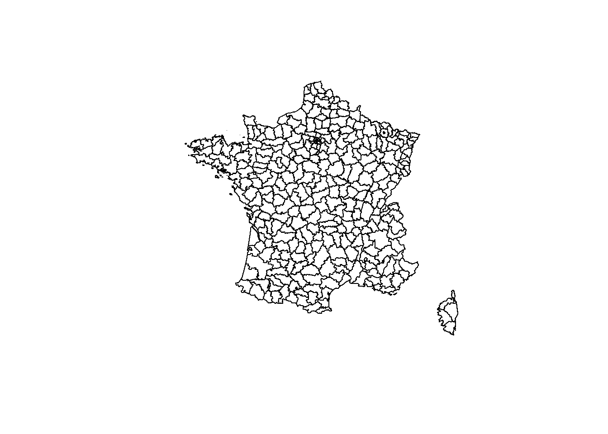
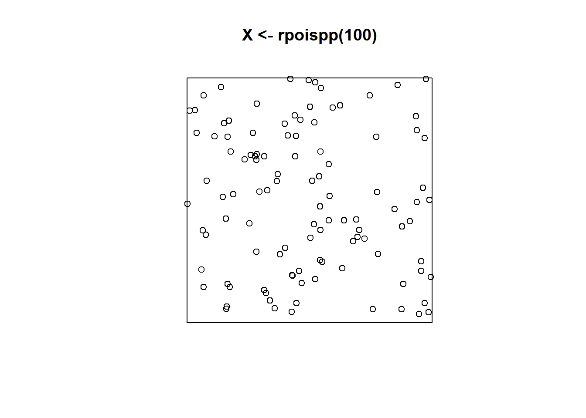
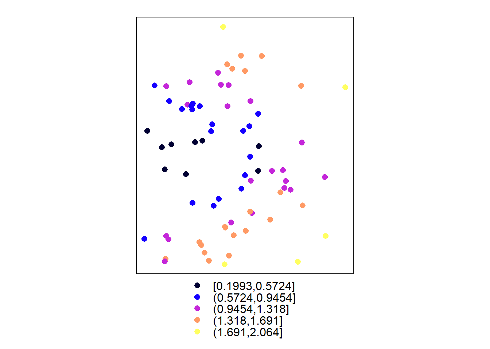

2 Utilisation de fonds de carte
L’objectif est ici d’interpoler une variable continue du même type sur les centroïdes de polygones d’une carte vectorielle (un shapefile) plutôt que sur une grille.
2.1 Obtention des cartes
Le package raster permet de télécharger des fonds de carte administratifs, des modèles numériques de terrain, des cartes de climat : voir l’aide de la fonction getData.
library("raster")
# Récupération du shapefile des limites de régions
# de France
France <- raster::getData("GADM", country = "FRA",
level = 3)
# Projection de France en Lambert 93
France <- spTransform(France, CRS("+init=epsg:2154"))
plot(France)
2.2 Fabrication des données
Les données sont 100 points placés aléatoirement dans un rectangle contenant la France. Leur marque est une valeur numérique continue, augmentant linéairement de l’ouest vers l’est et avec la distance à la latitude moyenne, et contenant un bruit gaussien.
library("spatstat")
# Tirage d'un processus de Poisson, 1000 points
# attendus, dans une fenêtre de 1x1
plot(X <- rpoispp(100))# Valeur de la marque
X$marks <- X$x + 3 * abs(X$y - 0.5) + rnorm(X$n, sd = 0.1)
# Calage sur Lambert 93 (pas très propre, la
# fenêtre n'est pas modifiée...)
X$x <- 8e+05 * X$x + 3e+05
X$y <- 9e+05 * X$y + 62000002.3 Interpolation
Les valeurs de \(x\), \(y\) et \(z\) doivent être intégrées dans un objet Spatial.
# Nécessite un dataframe avec les colonnes x et y
# plus un dataframe avec la valeur à cartographier
SpatialX <- SpatialPointsDataFrame(coords = data.frame(x = X$x,
y = X$y), data = data.frame(m = X$marks))
# Le système de projection doit être le même
proj4string(SpatialX) <- proj4string(France)
# Découpe
SpatialX <- SpatialX[France, ]
# Carte des points
spplot(SpatialX, "m") L’interpolation est faite avec gstat.
library("gstat")
# Variogramme empirique
vgmEmpirique <- variogram(m ~ 1, data = SpatialX)
# Ajustement d'un modèle gaussien
vgmX <- fit.variogram(vgmEmpirique, vgm("Gau"))
# Objet geostat qui décrit toutes les
# caractéristiques de la modélisation
geoX <- gstat(formula = m ~ 1, locations = SpatialX,
model = vgmX)
# Calcul de la valeur de m sur les centroides des
# polygones
geoXprd <- predict(geoX, newdata = France)## [using ordinary kriging]# Carte finale
spplot(geoXprd, "var1.pred")